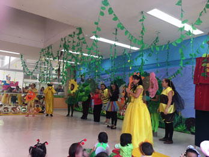

El objetivo es llevar a cabo prácticas educativas normadas y basadas en los Planes y Programas de estudio para la Educación Inicial y Preescolar vigentes. Construir vínculos afectivos y sólidos entre pares y adultos que ayuden a las niñas y los niños a desarrollar un sentido positivo de sí mismos. Desarrollar en las niñas y niños oportunidades para potencializar sus capacidades de aprendizaje e interacción con su entorno. Ofrecer experiencias en un medio físico y social donde los niños reciban estímulos fundamentales para ampliar sus conocimientos, habilidades y valores. Propiciar ambientes de aprendizajes enriquecedores para favorecer los conocimientos que adquieren los niños y niñas que asisten a los Centros de Desarrollo Infantil y Jardín de Niños. Colaborar en reuniones multidisciplinarias para la oportuna intervención en casos especiales que favorezcan el desarrollo integral de los niños y las niñas. Favorecer con los padres de familia una crianza amorosa y compartida a través de orientaciones para mejorar la comprensión de cómo se desarrollan y aprenden los niños y las niñas
